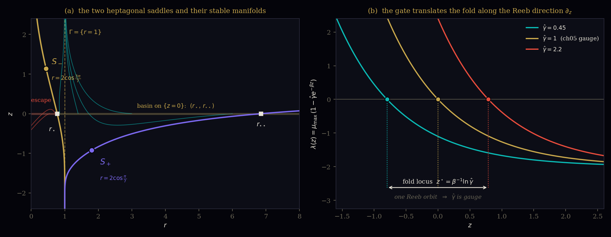

The gate parameter is the Reeb flow. WP43 and WP44 have been using this result since it was worked out; what was missing was not the mathematics but the write-up, and the cost of leaving it unwritten was that the claim could not be cited, sharpened, or attacked. This paper supplies the formalisation: an exact identity, a gauge theorem, a moduli count, and a numerical verification to thirteen digits — plus two results the formalisation turned up on the way, including an exact algebraic address for the toy model's basin boundary \(r_\star\), which Volume II's invariant table still lists as argued.
On the contact manifold \((M,\alpha)\) with \(\alpha = dz - r^2 d\theta\), the Reeb field is \(R=\partial_z\), and its flow is a strict contactomorphism. The dm³ gate multiplier \(\hat\gamma\) — Volume II's \(\gamma\) in \(H_{\mathrm{diss}} = -\gamma V e^{-\beta z}\), normalised — enters the normal form only through the combination \(\hat\gamma e^{-\beta z}\). Therefore the family \(\{X_{\hat\gamma}\}\) is a single orbit of the Reeb flow: \(\hat\gamma\) is a gauge potential, not a modulus, and the state and the control enter the dynamics only through the one invariant \(\zeta = z - \beta^{-1}\ln\hat\gamma\). That is the precise content of "the controls are coordinates on the manifold itself" [proved].
Three consequences follow without further hypotheses. The fold locus sits at \(z^\star = \beta^{-1}\ln\hat\gamma\), with \(\lambda'(z^\star)=\mu_{\max}\beta \neq 0\), so the \(A_1\) transversality of Vol I Theorem 5.5 is explicit rather than generic [proved]. The gauge-reduced system carries exactly one dimensionless modulus, \(\Lambda = \beta\omega/|\mu_{\max}|\): the canonical triple of ch05 collapses to a single number once the gauge is fixed [proved]. And acting on the gate does not move the state — it moves the basin, which is a sharper and more defensible reading of WP43's mandate than the one WP43 currently gives [proved].
Two results arrived unbidden. The dm³ toy model's off-cycle equilibria are exactly \(r = 2\cos(k\pi/7)\), \(k=1,3,5\) — the roots of the heptagonal cubic \(r^3-r^2-2r+1\), discriminant \(49\) — and all three are saddles, provably, by Descartes' rule applied to the minimal polynomial of their determinants [proved]. Volume II's certified basin boundary \(r_\star\) is the intersection of the inner saddle's stable manifold with \(\{z=0\}\); recomputed two independent ways it is \(0.7759405755\), and the outer boundary — not previously reported — is \(6.8592213690\) [numerical]. §8 gives the ledger of what is proved, what is numerical, and the one physical premise §7 still rests on.
The draft that preceded this one described WP44 §1's claim as having been "asserted without proof." That was the wrong diagnosis and it is worth correcting in the record, because the wrong diagnosis produces the wrong repair. The claim was worked out — the Reeb identification, the \(\hat\gamma\)-as-translation observation, the \(\zeta\) combination — and then used, at speed, in a stretch of the series that was not in a formalising mood. What did not happen was the write-up. Nothing was assumed; something was left unwritten.
The distinction matters operationally. An unproved assertion has to be defended or withdrawn. An unwritten derivation has to be written, and the cost of not writing it is a specific one: for two papers the result could not be cited by name, could not be sharpened past the sentence it was first stated in, and — the part that actually bit — could not be attacked, which is how the sentence in WP43 came to be stronger than the mathematics warrants. §6 fixes that overreach, and it could only be found by doing the write-up.
So: what follows is a formalisation, not a rescue. Three papers cite it. WP44 §1 states it as a theory-card contrast with Thom — Thom keeps controls in an external plane; on a contact manifold they are coordinates on the manifold itself. WP43's August 2026 addendum leans on it for the mandate. WP68 §2 defers to it explicitly. All three are now discharged, one of them with an amendment.
Everything below is built from three things already on record, cited exactly as they stand.
On \(M=\mathbb{R}^2_{>0}\times\mathbb{R}\) with \(\alpha = dz - r^2 d\theta\), in a tubular neighbourhood of \(\Gamma\), with \(\rho = r-1\):
Canonical invariants \((\mu_{\max},\omega,\beta)\), with \(\mu_{\max}<0\) in every orbit on record and \(1.6\le\beta\le 2.4\) empirically. Note on notation: the drift term in \(\dot z\) is \(\omega\), the angular frequency — not a free constant \(\dot z_0\). The earlier draft of this paper wrote \(\dot z_0\); ch05 and Vol II §2.3 both write \(\omega\), and §5 below shows why that identification is not cosmetic: it is what makes \(\Lambda\) a ratio of the three canonical invariants and nothing else.
The fold impulse \(p^+-p^-=\mu\mathbf n\) corresponds to the contact Hamiltonian correction \(H_{\mathrm{diss}}(x,z) = -\gamma V(x)e^{-\beta z}\), with \(V\) the Lyapunov function vanishing on \(\Gamma\).
Vol II carries this as a ★★★★ sorry. §3–§6
below do not depend on Theorem A being closed: they use only the form of
\(H_{\mathrm{diss}}\), which §3 verifies directly by computation. §7 does depend on the
identification of \(\gamma\) with a physical gate, and says so.
with \((\mu_{\max},\omega,\beta)=(-2,1,1)\), \(T^*=2\pi\), \(\tau=2\), \(\varepsilon_0=1/3\). This is the only place in the framework where every claim can be checked to the last digit, and §6 uses it that way.
Every vector field \(X\) on a contact manifold splits canonically as \(X = X_\xi + \alpha(X)\,R\), where \(X_\xi \in \xi = \ker\alpha\) and \(R\) is the Reeb field. The splitting is not a choice: \(\xi\) and \(R\) are both determined by \(\alpha\). So there is a well-defined question — what is the Reeb component of the dm³ field? — with a computable answer.
For \(\alpha = dz - r^2d\theta\) on \(M\): (i) the Reeb field is \(R = \partial_z\); (ii) for the dm³ toy field \(X\),
That is: the dm³ dissipation is exactly the Reeb component of the flow, with no remainder and no limit taken.
(i) \(\alpha(\partial_z)=1\); \(d\alpha = -2r\,dr\wedge d\theta\), so \(\iota_{\partial_z}d\alpha = 0\). Both Reeb conditions hold, and \(\mathcal L_{\partial_z}\alpha = d(\iota_{\partial_z}\alpha)+\iota_{\partial_z}d\alpha = d(1)+0 = 0\), so the Reeb flow is a strict contactomorphism, not merely a contactomorphism. (ii) Direct substitution of (M3): \(\dot z - r^2\dot\theta = (r^2-2(r-1)^2e^{-z}) - r^2\cdot 1\). Verified symbolically [proved]. For the general normal form (M1) the same computation gives \(\alpha(X) = -|\mu_{\max}|\rho^2 e^{-\beta z} + O(\rho)\), the \(O(\rho)\) being the truncation of \(r^2\omega\) to \(\omega\) in \(\dot z\).
Lemma 1 is the hinge. It says the gate and the fold do not merely both happen to involve \(z\): the exponential gating term is the flow's component along the one distinguished direction the contact form defines. There is exactly one such direction, and it is one-dimensional. Whatever else is true, the control and the approach to the fold are competing for the same single channel.
Reinstate the gate multiplier that (M1) suppresses. Write \(\mu = |\mu_{\max}|\) and \(\hat\gamma = \gamma/\mu\), so that \(\hat\gamma = 1\) recovers ch05 exactly. Because both exponential terms in (M1) descend from the single Hamiltonian \(H_{\mathrm{diss}}\) of (M2), \(\hat\gamma\) multiplies both:
That \(\hat\gamma\) enters both places with the same coefficient is checkable, not assumed: in the toy system (M3) the gate coefficient is \(2\) in \(\dot r\) and \(2\) in \(\dot z\), and both equal \(|\mu_{\max}|\). If a physical mechanism moved the two independently, Theorem 1 would fail — see §9, falsifier F1.
Let \(T_a: (\rho,\theta,z)\mapsto(\rho,\theta,z+a)\) be the time-\(a\) Reeb flow. Then \((T_a)_* X_{\hat\gamma} = X_{\hat\gamma e^{\beta a}}\). Consequently:
\(T_a^*\alpha = d(z+a)-r^2d\theta = \alpha\), so \(T_a\) is strict (Lemma 1(i)). Under \(z' = z+a\), \(\hat\gamma e^{-\beta z} = (\hat\gamma e^{\beta a})e^{-\beta z'}\), which is (1). (2): \(\lambda(z) = \mu_{\max}(1-\hat\gamma e^{-\beta z}) = 0 \iff \hat\gamma e^{-\beta z}=1\). (3): substituting \(z = \zeta + \beta^{-1}\ln\hat\gamma\) gives \(\hat\gamma e^{-\beta z} = e^{-\beta\zeta}\) identically, and the extra term is \(\dot\zeta = \dot z - \beta^{-1}\,d(\ln\hat\gamma)/dt\). All three verified symbolically [proved].
This is WP44 §1's claim, and it is now a theorem. Thom's controls live in a factor \(\mathcal X\times\mathcal C\) and can be varied while the state stands still. Here the control direction and a state coordinate are the same one-dimensional direction — the Reeb line — and "vary \(\hat\gamma\)" and "translate \(z\)" are two names for one operation.
The level of \(\hat\gamma\) is not observable: no measurement on the reduced dynamics can determine it. Only \(\Delta\ln\hat\gamma\) is, and it enters as a displacement \(\Delta\zeta = -\beta^{-1}\Delta\ln\hat\gamma\). Margin bought is logarithmic in gate strength. Halving \(\hat\gamma\) buys \(\beta^{-1}\ln 2\) of \(\zeta\) — the same amount as halving it again, and again.
\(\lambda'(z^\star) = \mu_{\max}\beta \neq 0\). Vol I Theorem 5.5 asserts fold-locus transversality generically; here the transversality constant is one of the canonical invariants times another. The fold is \(A_1\) with a computable non-degeneracy, which is what chF's Proof 4 needs and had only by genericity.
On Darboux, which the earlier draft flagged as the objection to beat: Darboux trivialises \(\alpha\) and would trivialise "the fold sits at \(z=0\)" if that were the claim. It is not. The claim is about a group action on a family — that a specific one-parameter family of vector fields is one orbit of a specific one-parameter group. Darboux says nothing about that, and the Reeb field, unlike \(\xi\) alone, is pinned by \(\alpha\) rather than by the contact structure. The content survives the objection intact.
Having removed \(\hat\gamma\) as gauge, ask what is left. Rescale time by the relaxation rate and \(\zeta\) by the fold sharpness: \(\tau = \mu t\), \(\tilde\zeta = \beta\zeta\), \(\tilde\rho = \rho\sqrt\beta\).
The gauge-reduced dm³ system near \(\Gamma\) has exactly one dimensionless modulus. Two dm³ systems with the same \(\Lambda\) are equivalent near \(\Gamma\) whatever their \((\mu_{\max},\omega,\beta)\) individually are.
Direct substitution [proved]. \(\Lambda\) is the number of gate e-foldings the drift covers per relaxation time. Toy model: \(\Lambda = 1\cdot 1/2 = 1/2\).
This is a real reduction and it has a cost worth naming. ch05 sells \((\mu_{\max},\omega,\beta)\) as "the canonical invariants — identifying a new system means measuring three numbers." After gauge reduction only the combination \(\beta\omega/|\mu_{\max}|\) is invariant; the other two degrees of freedom are absorbed by rescaling time and \(\zeta\). ch05's three numbers are three measurements, and they are the right three to make, but they are not three independent invariants of the reduced system. That \(\omega\) appears in \(\Lambda\) at all is due entirely to the \(\dot z\) drift being \(\omega\) rather than a free constant — the notational point flagged in (M1).
Here the formalisation contradicts something WP43 currently says, so it is worth being slow. WP43's addendum reads: "delay does not hold the system at a fixed distance from the fold." The natural reading — that the system drifts toward the fold and delay costs you that drift — is false for this system, and Theorem 2 shows why in one line: near \(\Gamma\), \(\tilde\rho\to 0\) and \(d\tilde\zeta/d\tau \to \Lambda > 0\). Margin accumulates. That is Vol II's whole post-fold stabilisation story, and it cannot be given up.
All four verified symbolically [proved]. The saddle-on-the-fold in (3) sits at \(|\rho| = \sqrt{\omega/(\beta|\mu_{\max}|)}\), which for the toy is \(0.7071\) — outside the \(O(\rho^2)\) validity of the truncation. §6.1 does it exactly instead, and the truncation turns out to be off by 12–27%, as one would expect at that amplitude.
Do not truncate. Equilibria of (M3) off \(\Gamma\) require \(\dot z = 0\), giving \(e^{-z} = r^2/\bigl(2(r-1)^2\bigr)\); substituting into \(\dot r = 0\) and clearing denominators gives \(r\cdot(r^3-r^2-2r+1) = 0\).
The off-cycle equilibria of the dm³ toy model are exactly \(r = 2\cos(k\pi/7)\), \(k = 1,3,5\) — the three roots of \(r^3-r^2-2r+1\), whose discriminant is \(49 = 7^2\) and whose splitting field is \(\mathbb{Q}(\cos 2\pi/7)\), the real cyclotomic field of conductor 7. Two lie in \(M = \mathbb{R}^2_{>0}\times\mathbb{R}\). Each is a hyperbolic saddle.
Trace and determinant in closed form. At an equilibrium, \(\operatorname{tr}J = 1-2r^2+r^2/(r-1)^2\) and \(\det J = r^2\bigl(r^2-2r-(r-1)^2(3r^2-1)\bigr)/(r-1)^2\). Reduced modulo the cubic, the traces are the roots of \(x^3+x^2-2x-1\) — the minimal polynomial of \(2\cos(2\pi/7)\), so the trace map permutes the Galois orbit — and the determinants are the roots of \(x^3+35x^2+147x+49\). All coefficients of that polynomial are positive, so by Descartes' rule it has no positive root and \(0\) is not a root: all three determinants are strictly negative, hence all three equilibria are saddles. No sinks, no sources, no spirals [proved].
| \(S_-\) (inner) | \(S_+\) (outer) | third root | |
|---|---|---|---|
| \(r\) | \(2\cos\frac{3\pi}{7}=0.4450418679\) | \(2\cos\frac{\pi}{7}=1.8019377358\) | \(2\cos\frac{5\pi}{7}=-1.2469796037\) |
| \(z=\ln\frac{2(r-1)^2}{r^2}\) | \(+1.1345958011\) | \(-0.9260266515\) | — (outside \(M\)) |
| \(\operatorname{tr}J\) | \(+1.2469796037\) | \(-0.4450418679\) | \(-1.8019377358\) |
| \(\det J\) | \(-0.3646655852\) | \(-30.1835877730\) | \(-4.4517466418\) |
| eigenvalues | \(+1.49147893,\;-0.24449932\) | \(-5.72098466,\;+5.27594279\) | — |
\(e^{z}\) at the equilibria has minimal polynomial \(x^3-10x^2+24x-8\); the equilibrium data therefore lives entirely in the cubic field of the regular heptagon. Whether that is structural or an accident of the toy model's specific coefficients is open — see §9, F4. The truncated normal form of Theorem 3(3) predicts the saddles at \(\rho = \pm 0.7071\); the exact values are \(\rho = +0.8019\) and \(\rho = -0.5550\), errors of \(-12\%\) and \(+27\%\), consistent with \(O(\rho)\) relative error at \(|\rho|\approx 0.6\text{–}0.8\).
Vol II's invariant table lists "critical ratio \(r^*\approx 0.776\) — argued — inner/outer basin boundary (certified 0.77594059)", and ch05 notes the gap from the Grönwall estimate \(\varepsilon_0 = 1/3\) is not a matter of sharpness. Proposition 4 identifies the object:
The inner basin boundary is \(W^s(S_-)\cap\{z=0\}\) and the outer is \(W^s(S_+)\cap\{z=0\}\):
Computed two independent ways that agree: (a) bisection of the forward flow's fate from \((r_0,0)\); (b) backward integration along the stable eigendirection at each saddle to the level \(z=0\). Route (b) is the well-conditioned one — transverse errors contract in backward time — and is stable across \(\varepsilon\in[10^{-12},10^{-8}]\) and \(\texttt{rtol}\in[3\!\times\!10^{-14},10^{-12}]\). Double precision, DOP853 [numerical], not certified. Correction: Vol II's eighth digit appears to be off — this computation gives \(0.77594058\), not \(0.77594059\). The outer boundary \(r_{\star\star}\) does not appear in Vol II at all; the Grönwall bound \((2/3,4/3)\) is conservative on the inner side by \(0.11\) and on the outer side by a factor of \(5.1\).

Theorem 1 is proved for the normal form. It should also hold for the exact, untruncated toy system, and that is a strong numerical test — one that could easily have failed if the \(\hat\gamma\)-in-both-terms structure were an artifact of the truncation. Run the gated exact system \(\dot r = r(1-r^2)+2\hat\gamma(r-1)e^{-z}\), \(\dot z = r^2-2\hat\gamma(r-1)^2e^{-z}\) and bisect its basin boundary on \(\{z=0\}\). Theorem 1 predicts this equals the single, gate-independent separatrix \(W^s(S_-)\) read at level \(\zeta = -\beta^{-1}\ln\hat\gamma\).
| \(\hat\gamma\) | gated system, bisected | \(W^s(S_-)\) read at \(\zeta=-\ln\hat\gamma\) | difference |
|---|---|---|---|
| 0.5 | 0.5722354584 | 0.5722354584 | 6.8×10⁻¹⁴ |
| 1.0 | 0.7759405755 | 0.7759405755 | 3.7×10⁻¹⁴ |
| 2.0 | 0.9352791771 | 0.9352791771 | 1.7×10⁻¹³ |
The gate is a Reeb translation in the exact system, to within integrator tolerance. And the operational reading is stark: doubling the gate moves the basin boundary from \(0.776\) to \(0.935\) — closing three-quarters of the remaining margin below \(\Gamma\) — while halving it opens the basin down to \(0.572\). The local sensitivity is \(dr_\star/d\zeta = -0.2774\) at \(\zeta=0\) [numerical], and the response is logarithmic in \(\hat\gamma\), per Corollary 1.1.
WP43's "delay does not hold the system at a fixed distance from the fold" should be replaced. What is true, and provable, is: the gate translates the basin; a state at fixed amplitude finds the boundary moving toward it as the gate strengthens, and the margin bought back is logarithmic in gate strength. That is a stronger argument for acting early, not a weaker one — early action is cheap in \(\ln\hat\gamma\), late action is not — but it is a different argument, and the current wording claims a drift toward the fold that Theorem 2 rules out near \(\Gamma\). WP43 should be edited before this paper is cited in support of it.
Theorem 1 fixes the fold at \(\zeta = 0\) in the reduced dynamics and at \(z^\star(K) = \beta^{-1}\ln\hat\gamma(K)\) in the physical \(z\)-chart. The Reeb translation is a symmetry of the reduced family, so no measurement on the reduced dynamics can recover \(\hat\gamma\). But \(\Delta T\) is not a measurement on the reduced dynamics — it is attached to the ambient physical system, and the map \(\Psi\) from normal-form coordinates to observables is what pins \(z\) to physical units. \(\Psi\) breaks the gauge, and that breaking is precisely what makes a threshold shift measurable at all.
Assume (P): \(K\) enters the dm³ reduction only through the gate multiplier \(\gamma\). Then
with \(c_\Psi = \partial\Psi/\partial z\) at the fold. The \(K\)-dependence of \(\Psi\) is forced, and its functional form is predicted.
This is what the earlier draft could not do. There, "K is an argument of \(\Psi\)" was read off WP66's measurement as evidence — an inference from two data points to a structural claim. Here it is a consequence of Theorem 1 given (P), and WP66's numbers become a test of a predicted log law rather than the support for the claim. That is a real change in the direction of the argument, and it moves the exposed surface from something vague ("is K an argument of some map?") to something a modeller can check ("does land-use enter the reduction as a multiplier on the gating term, or somewhere else?").
(P) is a physical identification, not a theorem, and this paper does not prove it. But it is a much smaller and more checkable thing than what the earlier draft leaned on. It says: the Andes–Amazon moisture corridor acts on the dm³ reduction the way \(\gamma\) does — as a multiplier on the \(e^{-\beta z}\) gating term — rather than shifting \(\omega\), \(\beta\), or \(\mu_{\max}\) independently. That is exactly the object WP66 §7.2's Open Problem O1 would settle: numerical continuation in a coupled model with interactive vegetation, verifying the fold occurs at the predicted ratio. WP69 does not close O1. It reduces its role from "the support for Step 3" to "the check on premise (P)", and it hands O1 a sharper target than it had: not just does the fold move, but does it move logarithmically, with slope \(c_\Psi/\beta\).
| Result | Status | Depends on |
|---|---|---|
| Lemma 1 · \(R=\partial_z\); \(\alpha(X)=H_{\mathrm{diss}}\) exactly | PROVED | (M3) only — computation |
| Thm 1 · gate family = one Reeb orbit; \(\hat\gamma\) is gauge | PROVED | (M1), form of (M2) |
| Thm 1(2) · fold at \(z^\star=\beta^{-1}\ln\hat\gamma\); Cor 1.2 transversality | PROVED | (M1) |
| Thm 2 · single modulus \(\Lambda=\beta\omega/|\mu_{\max}|\) | PROVED | (M1) + Thm 1 |
| Thm 3 · no rest near \(\Gamma\); mandate is a basin statement | PROVED | Thm 2 |
| Prop 4 · equilibria at \(2\cos(k\pi/7)\); all saddles | PROVED | (M3) — exact algebra |
| Prop 5 · \(r_\star=0.7759405755\), \(r_{\star\star}=6.8592213690\) | NUMERICAL | double precision, 2 routes |
| §6.3 · Thm 1 verified in the exact system to \(10^{-13}\) | NUMERICAL | double precision |
| Thm 5 · \(\Delta T_{\mathrm{crit}}\) log-linear in gate | CONDITIONAL ON (P) | Thm 1 + premise (P) |
| Premise (P) · \(K\) enters only through \(\gamma\) | OPEN — is O1 | — |
| Vol II Theorem A (★★★★ sorry) | OPEN, upstream | not used by §3–§6 |
The load-bearing distinction: §3–§6 hold whatever climate science says — they are facts about the normal form and about an explicit ODE. §7 is the only place a physical premise enters, and it enters at exactly one point, named.
| Destination | Content | Status |
|---|---|---|
wp43-immediate-action.html | Amend the drift wording per §6.3's amendment box, then replace "See WP69 (forthcoming)" with a link to §6 | EDIT REQUIRED |
wp44-catastrophe-manifold.html §1, §7.2 | Replace both "(WP69, forthcoming)" citations with §4 (Theorem 1). The Thom contrast in §1 is now literally correct rather than programmatic | PENDING REVIEW |
wp66-the-wall-already-standing.html §7.2 | O1 is now the check on premise (P), with a sharper target: the log law and its slope \(c_\Psi/\beta\) | PENDING REVIEW |
wp68-what-fossilises.html §2 | Resolve the forward reference. §2's deferred question — is the locus fixed or does it move — answers: it moves, by \(\beta^{-1}\ln\hat\gamma\), and only by that | PENDING REVIEW |
../vol2-toymodel.html §7 | Invariant table: \(r^*\) upgraded from argued to identified — it is \(W^s(S_-)\cap\{z=0\}\); add \(r^{**}=6.8592213690\); reconcile the eighth digit | CORRECTION |
../vol2-contact.html | Theorem 1 as a Theorem D. It is independent of Theorem A's open sorry and is a candidate for Lean before Theorem A is | PROPOSED |
../ch05-contact-normal-form.html | Note that the stated form fixes the gauge \(\hat\gamma=1\) silently, and that after gauge reduction the canonical triple carries one invariant, \(\Lambda\) | PENDING REVIEW |
../chF-catastrophe.html §3 | Proof 4's genericity can be upgraded: Cor 1.2 gives the \(A_1\) non-degeneracy constant explicitly as \(\mu_{\max}\beta\) | PENDING REVIEW |
Nothing in this table has been applied. Two rows are corrections to published files and should be looked at before anything else here is used.
The gate is the Reeb flow. That single sentence carries the whole thing: the control parameter and a state coordinate are the same one-dimensional direction, so "acting on \(K\)" and "translating the fold" are one operation, and the state and the control enter the dynamics only through \(\zeta = z-\beta^{-1}\ln\hat\gamma\). Thom's external control plane is not merely a different choice here — it is unavailable, because the manifold has no such factor to put it in.
Writing it down cost three things and bought four. It cost an amendment to WP43, whose drift wording claims something Theorem 2 forbids; a correction to Vol II's eighth digit; and the admission that ch05's three canonical invariants carry one invariant after gauge reduction, not three. It bought an explicit \(A_1\) transversality constant, a single modulus \(\Lambda = \beta\omega/|\mu_{\max}|\), an exact algebraic address for the toy model's equilibria and its basin boundary, and — the one that matters for the climate arc — a predicted functional form for the threshold shift, which converts WP66's measurement from the argument's support into its test.
All symbolic claims verified in SymPy; all numerics in SciPy DOP853 at
\(\texttt{rtol}\le 10^{-12}\), \(\texttt{atol}\le 10^{-15}\), cross-checked at two tolerances and
two independent methods where stated. The companion script
wp69-verify.py reproduces every number in this paper — Prop 4's cubic and its
trace/determinant minimal polynomials, Prop 5's two boundaries, and §6.3's thirteen-digit agreement —
and prints them in the order they appear above.
$ python3 wp69-verify.py
[1] equilibrium cubic r^3 - r^2 - 2r + 1, disc = 49
[2] roots 2cos(pi/7), 2cos(3pi/7), 2cos(5pi/7)
[3] trace minpoly x^3 + x^2 - 2x - 1 (= minpoly of 2cos(2pi/7))
[4] det minpoly x^3 + 35x^2 + 147x + 49 (all roots negative -> all saddles)
[5] alpha(X) - H_diss 0
[6] Reeb d_z , L_{d_z} alpha = 0
[7] r_star 0.7759405755023
[8] r_starstar 6.8592213690
[9] gauge check, ghat=1/2,1,2 max |gated bisection - W^s level| = 1.7e-13